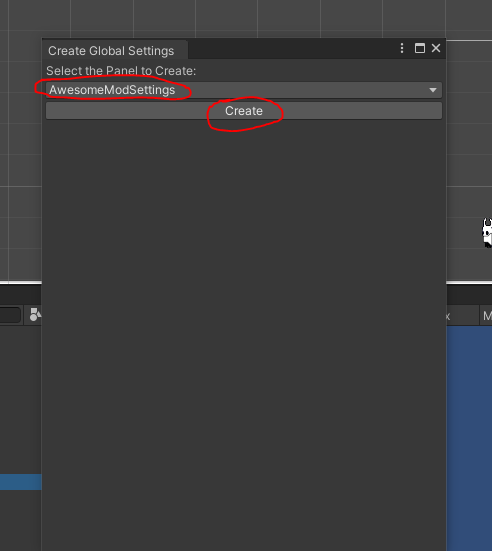
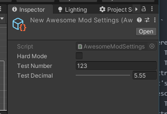
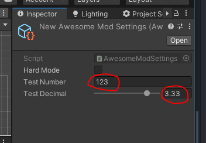
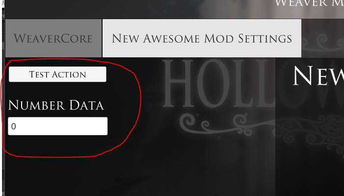
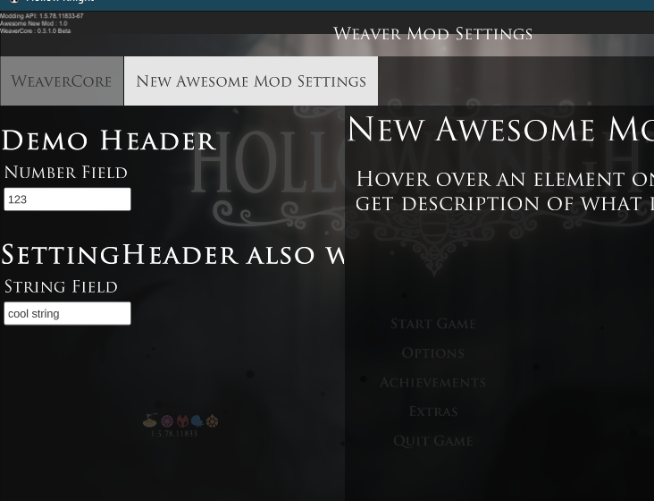

Mod Global Settings
In WeaverCore, the main way you can setup mod configuration is via the GlobalSettings class. Inheriting from this class allows you to add a configuration tab to the WeaverCore Settings Menu. In the intro, we did a simple example of one already, but this time we will go into more detail on how to use it.
Creating One
Here's a refresher on how to create one and add it in-game. First, you need to create a Script file in the "Assets" folder, and in it, you need a class that inherits from WeaverCore.Settings.GlobalSettings. The name of the script and class can be anything you want:
using System;
using System.Collections.Generic;
using System.Linq;
using System.Text;
using System.Threading.Tasks;
using WeaverCore.Settings;
public class AwesomeModSettings : GlobalSettings
{
}
Now, we need to create an instance of this class. You can do so by going to "WeaverCore -> Create -> Global Settings", select the name of your class, and click on Create:

This will create an instance of the class in the "Assets" folder.

Finally, to make it appear in the Settings Menu in-game, add it to the registry:

Now if we go ahead and build our mod and start the game, we should see a new tab in the WeaverCore Settings Menu:

Customizing It
Currently, we don't have any elements to display. Lets create some!. There are three different methods of creating UI Elements, I will explain each of them in order of difficulty:
Method 1 - Using Unity's Attributes
using System;
using System.Collections.Generic;
using System.Linq;
using System.Text;
using System.Threading.Tasks;
using UnityEngine;
using WeaverCore.Settings;
public class AwesomeModSettings : GlobalSettings
{
//Any public fields will get displayed in the settings menu
public bool hardMode = false;
//Any fields marked with SerializeField will also be displayed in the settings menu
[SerializeField]
[Tooltip("Use the Tooltip attribute to describe the field when the player hovers over it")]
private int testNumber;
[SerializeField]
[Range(-5f,5f)] //The Range Attribute limits the player to specifying a number between -5 and 5
private float testDecimal;
private string hiddenField;
}
Here, we have three fields that will get displayed in the settings menu.
- The hardMode field will be displayed because it is a public field
- The testNumber field will also get displayed because it has the "SerializeField" attribute applied to it. This attribute forces the field to be displayed regardless of whether it's public or private. It also has an attribute called "Tooltip", which is used to display a description of the field when the player hovers over it.
- The testDecimal field will also be displayed because it has the "SerializeField" attribute applied to it. However, it also has an attribute called "Range", which restricts the player to only giving it a number between -5 and 5
- Because hiddenField isn't marked as public, nor does it have "SerializeField", it will not show up settings menu
Also note that Unity's Serialization Rules also apply here. That means that any fields that are marked as public or have the "SerializeField" attribute applied will have their data stored to disk. This means if testDecimal gets changed to a value of 4.56, that value will be retained even if the player restarts the game.
If we head back to the Unity Editor, you will notice that the Global Settings object now has some fields on it:

These fields are all the fields that are Serialized (fields that are marked as public or have the [SerializeField] attribute attached). It is from here we can specify some default values, so when the player loads up our mod for the first time, they will be assigned some default values:

Now if you go and build the mod, you should see all three of these fields show up in the Settings Menu with the default values we specified.

Cool! We now have three configurable fields! And, because they are serializable fields, their data will be stored to a file, and the settings will be retained even if the player restarts the game.
Method 2 - Using the [SettingField] Attribute
Using Unity's own attributes to display elements in the Settings Menu works fine, but doesn't offer a lot of control. However, there is a new attribute to talk about called SettingField, which allows you to explicity control which fields are shown in the Settings Menu, regardless of whether they are serializable or not. Here's an example:
public class AwesomeModSettings : GlobalSettings
{
//Even though this field is not serializable, it will be forced to show in the settings menu anyway
[SettingField]
bool hardMode;
//Even though this field is serializable, it will be force to NOT show in the settings menu
[SettingField(EnabledType.Hidden)]
public int testNumber;
}
You may notice that the hardMode attribute isn't serializable (it not marked as public, nor does it have the [SerializeField] attribute attached). However, because it has the [SettingField] attribute attached, this will force it to be displayed in the Settings Menu. The testNumber field has the opposite effect. Even though the field is serializable, having [SettingField(EnabledType.Hidden)] on it forces it to NOT be shown.
Basically, you can think of the [SettingField] attribute as a way of overriding the default behavior.
Important
Note that fields that aren't serializable (such as the hardMode in the above example) won't have their data saved if the player changes its value. This however can sometimes be useful if you need more control over how the data gets saved.
There is another big thing that the [SettingField] attribute can do. Here's an example:
public class AwesomeModSettings : GlobalSettings
{
[SettingField(EnabledType.Hidden)]
[SerializeField]
int internalData = 0;
[SettingField] //--//--// The [SettingField] Attribute can be applied to properties
public int NumberData
{
get
{
return internalData;
}
set
{
internalData = value;
}
}
[SettingField] //--//--// The [SettingField] Attribute can be applied to functions
public void TestAction()
{
//This will show a button in the settings menu that will execute this method when clicked
}
}
The [SettingField] can also be applied to properties and methods. In the above example, the attribute has been applied to the NumberData property. Whenever the settings menu is opened, it will call the getter to get the value from the property, and whenever the player enters a new value into Element, it will call the setter to set the value in the property.
The attribute can also be applied to functions that take zero parameters. This results in a button displayed on the settings menu, that when clicked on, executes the function:

There's also complementary SettingDescription and SettingRange attributes, so you can apply tooltip descriptions and range limiters to these properties and functions:
[SettingField]
[SettingDescription("This a description for the number property field")]
[SettingRange(-10f,10f)]
public int NumberData
{
get
{
return internalData;
}
set
{
internalData = value;
}
}

Method 3 - Manually Creating UI Elements (Advanced)
Even if you aren't satified with the attribute system creating the UI elements for you, you can still create everything manually using the wide range of AddElement functions provided by the GlobalSettings class. Here are some examples:
using System;
using System.Collections.Generic;
using System.Linq;
using System.Text;
using System.Threading.Tasks;
using UnityEngine;
using WeaverCore.Settings;
public class AwesomeModSettings : GlobalSettings
{
int testNumber;
//Called when this settings panel gets opened in the settings menu
protected override void OnPanelOpen()
{
//Adds a UI Element where the player inputs a specific number. The "testNumber" field above will store the actual value
AddFieldElement(nameof(testNumber), "Test Number", "This is a test description for the number element");
//Adds a UI element where the player inputs a string of characters. You can specify custom getters and setter with this function
AddPropertyElement<string>(getString, setString, "Test String Property", "This is a test of a custom string element");
//Adds a header element. Can be useful for grouping related elements together
var headerElement = AddHeading("This is a header");
//Moves the header element to the top so it's the first thing that is displayed
headerElement.MoveToTop();
//Adds in an element that is only used for spacing elements apart
var spaceElement = AddSpacing();
//This makes the space element come right after the header element
spaceElement.Order = headerElement.Order + 1;
//Adds a button element that calls the AddNewElement() function every time it's clicked
AddButtonElement(AddNewElement, "Add Header", "Clicking this adds a new header to the settings panel");
}
string stringStorage = "test_test_test";
string getString()
{
return stringStorage;
}
void setString(string value)
{
stringStorage = value;
}
void AddNewElement()
{
//Add a new header element to the panel
AddHeading("A newly created header");
}
}
And here's what it looks like in-game:

Extra - Heading and Spacing Attributes
Unity's own [Header] and [Space] Attributes also work from within the settings menu. Using these will create headers and spaces above the fields they are placed on.
public class AwesomeModSettings : GlobalSettings
{
[Header("Demo Header")]
[Space] //Inserts space between header and numberField
public int numberField = 123;
[SettingHeader("SettingHeader also works")]
[SettingSpace]
public string stringField = "cool string";
}
And here's what that looks like:

How to access the settings in-game
There are two ways you can retreive the global settings of a mod in-game. The first is to use the Registry related functions to get an instance of the global settings object:
var settings = Registry.GetFeature<AwesomeModSettings>();
Debug.Log("Hard Mode = " + settings.hardMode);
The other way is to use GlobalSettings.GetSettings
var settings = GlobalSettings.GetSettings<AwesomeModSettings>();
Debug.Log("Hard Mode = " + settings.hardMode);
Using either of these methods allows you to access the global configuration data for a mod